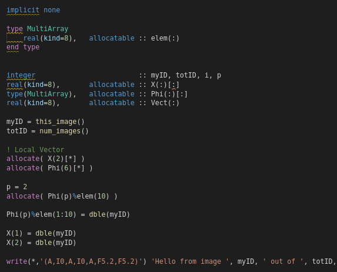

Fortran (Contracción de The IBM Mathematical Formula Translating System) es un lenguaje de programación de alto nivel de propósito general, procedural e imperativo, que está especialmente adaptado al cálculo numérico y a la computación científica.
Desarrollado originalmente por IBM en 1957 para el equipo IBM 704, y usado para aplicaciones científicas y de ingeniería, el FORTRAN vino a dominar esta área de la programación desde el principio y ha estado en uso continuo por más de medio siglo en áreas de cómputo intensivo tales como la predicción numérica del tiempo, análisis de elementos finitos, dinámica de fluidos computacional (CFD), física computacional y química computacional.
FORTRAN tuvo un antecesor dedicado al negocio, COMTRAN (COMmercial TRANslator) este influenciado por FLOW-MATIC y a su vez influenció en la creación de COBOL.
Es uno de los lenguajes más populares en el área de la computación de alto rendimiento y es el lenguaje usado para programas que evalúan el desempeño (benchmark) y el ranking de los supercomputadores más rápidos del mundo.
Volver  Imagen original